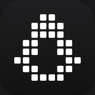

Drag meStep 1 of 2
Allow Accessibility
Drag Caveman Code into the list, then switch it on.
macOS asks for Touch ID or your password. Agents use your apps in the background and never move your pointer.

Drag meDrag Caveman Code into the list, then switch it on.
macOS asks for Touch ID or your password. Agents use your apps in the background and never move your pointer.